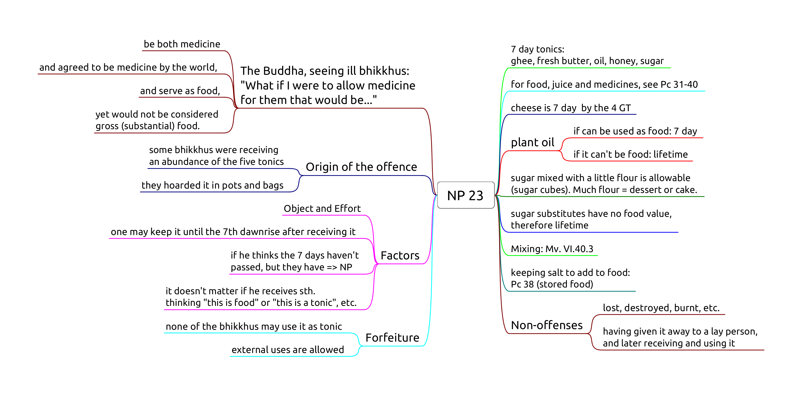
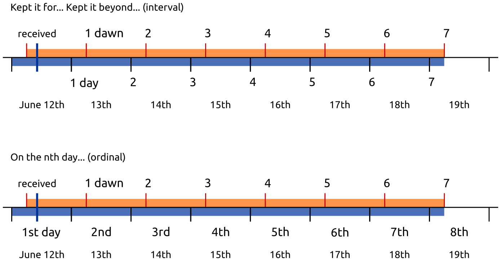

Food 2
- NP 23, Over-kept tonics
- Pc 31, Public alms centre
- Pc 32, Four bhikkhus specifically invited
- Pc 33, Meal before invitation
- Pc 34, More than three bowlfuls
- Pc 35, More food after turning down what was offered
- Pc 36, Tricking to break Pc 35
- Pc 41, Handing food to members of other religions
- Pc 47, Exceeding an invitation
NP 23, Over-kept tonics

Object: any of the five tonics.
Effort: one keeps the tonic past the 7th dawnrise after receiving it.
Perception is not a factor.
If one thinks the 7th dawn haven't passed, but it has, it is still NP.
If one thinks "I receive this salt as food for the morning, and this salt as medicine for later", it may be a personal practice, but not part of the rule. It doesn't affect the period of how long the item may be used by oneself or any other bhikkhu.
Mixing: The mixture takes on the shortest lifetime of the ingredients. (Mv. VI.40.3.)
| a. | 1d juice | rec. that morning | + | food | rec. that morning | → | that morning |
| b. | 7d tonic | rec. that morning | + | food | rec. that morning | → | that morning |
| c. | lifetime medicine | rec. that morning | + | food | rec. that morning | → | that morning |
| d. | 7d tonic | rec. sometime | + | juice | rec. that day | → | until dawn |
| e. | lifetime medicine | rec. sometime | + | juice | rec. that day | → | until dawn |
| f. | lifetime medicine | rec. sometime | + | 7d tonic | rec. sometime | → | 7 days |
7 days
Sattāha paramaṃ, "up to seven days". The Vinaya counts days from dawn to dawn, hence one may use a 7 day tonic until the 7th dawn.
Confusion arises from "7 days" meaning either "for 7 days" (interval) or "on the 7th day" (ordinal).

Breakfast tray
After dawn, one receives a tray with bread, jams, honey, butter and salt. At this point the lifetimes are:
- bread, jams: morning
- honey, butter: 7 days
- salt: lifetime
If the knife which one used carries bread morsels or jam into the honey or the butter, these will be only allowable in the morning.
If one is careful to clean the knife and avoid mixing, one may use them on the bread and keep the rest until their allowed lifetimes.
The next day, one receives a tray with only bread. One may not mix the allowables from the previous day with the food received today.
Putting the salt, honey or butter (rec. yesterday) on the bread would be Pc 38 (eating stored food).
Pc 31, Public alms centre
One may eat one meal at a public alms centre, not two or more days in a row.
Origin: the group of six feel tired of almsround and keep going to the same public kitchen.
Soup kitchens, homeless shelters, etc. Any place where all comers are offered food free of charge.
Non-offences
- one is invited by the owners
- being ill (not being able to leave)
- the food is intended for bhikkhus
- the centre limits the amount of food one may take (thus being able to censure a greedy person)
Pc 32
Pc 33
Pc 34
Pc 35
Pc 36
Pc 41, Handing food to members of other religions
One places oneself in the position of the followers of other religions.
It is not an offense to prepare food in a tray and placing it so that they can help themselves.
Pc 47, Exceeding an invitation
When an invitation is made that one may ask for certain requisites, one may use it until four months, unless it has been repeated, or is a permanent invitation.
Non-offenses
- from relatives
- for the sake of another
- from one's own resources
- being ill, if one shows consideration
"The time period for which we were invited has passed, but we have need of medicine."